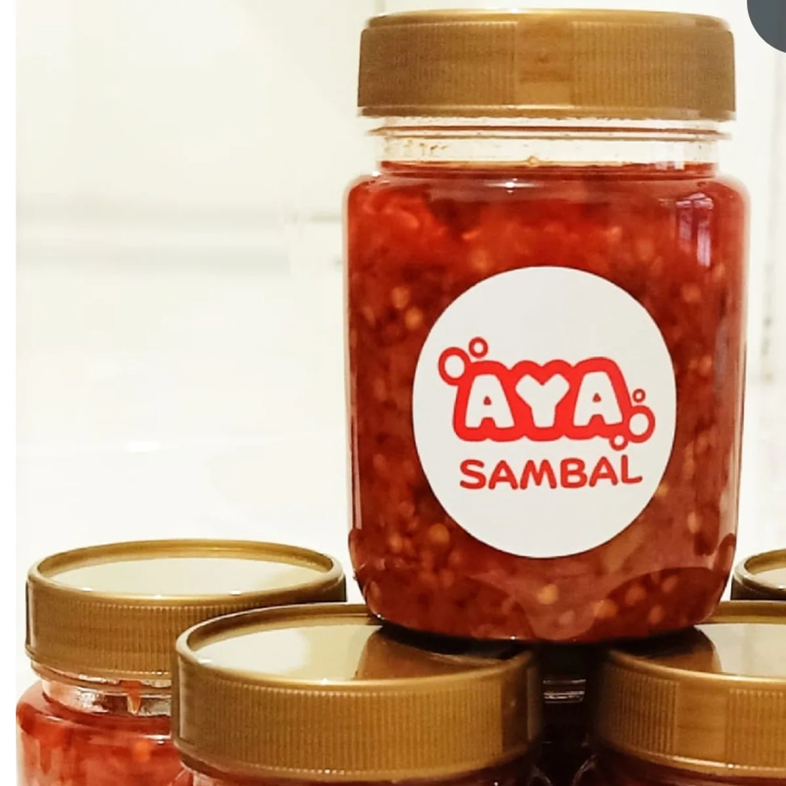
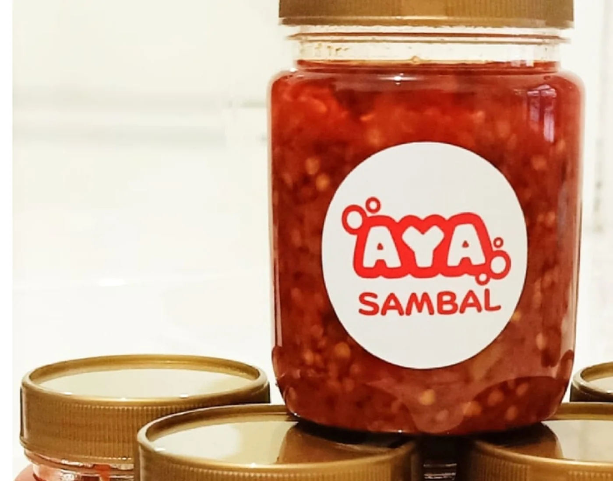
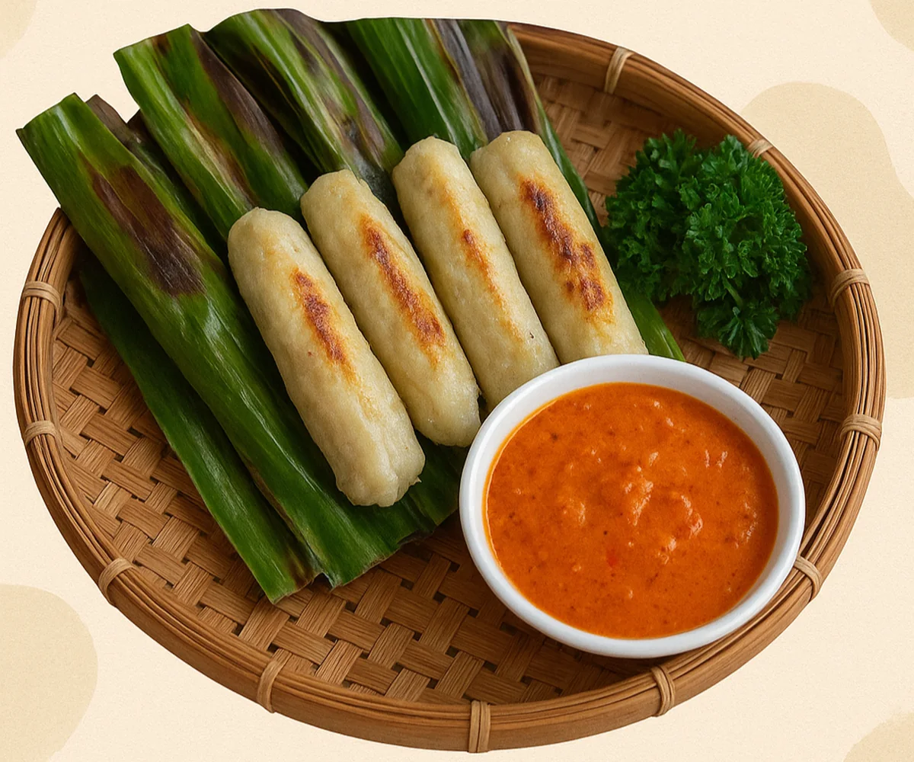
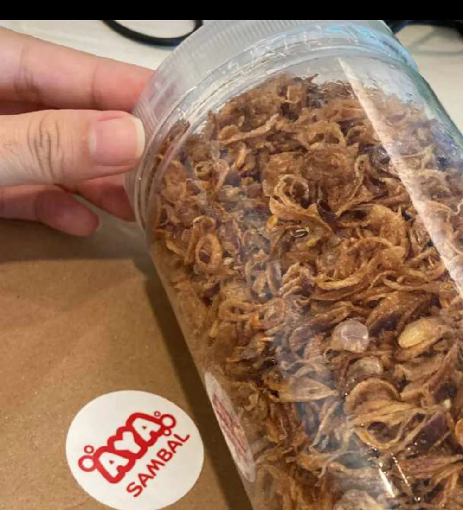

Dari dapur kami, untuk hidangan Anda
Pendamping makanan dengan rasa yang dekat.
AYA RAOS menghadirkan hasil bumi, pendamping makanan, camilan, dan minuman yang dibuat dalam jumlah terbatas dengan perhatian pada rasa, tekstur, dan konsistensi.

Rasa pilihan
dibuat dengan
perhatian
dibuat dengan
perhatian
Hero productSambal AYA
Produk utama AYA Spice Haven untuk menemani berbagai hidangan.
Tiga pilihan, satu kualitas
AYA RAOS
Tiga lini produk untuk kebutuhan berbeda, dipertemukan oleh perhatian yang sama terhadap kualitas dan pengalaman pelanggan.


Rasa rumahan yang tumbuh menjadi kepercayaan.
AYA RAOS percaya bahwa sajian sehari-hari dapat terasa lebih istimewa ketika dipadukan dengan produk yang tepat. Kepercayaan itu tumbuh dari pengalaman pelanggan yang telah menikmati produk AYA.

Testimoni pilihan
“Enak bangettt.”Pelanggan AYA Bawang Goreng · testimoni arsip
Punya pengalaman bersama AYA?
Bagikan pengalaman →